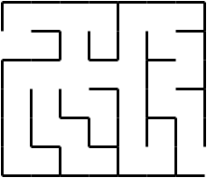
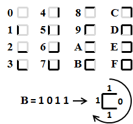
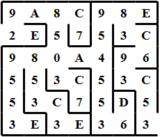
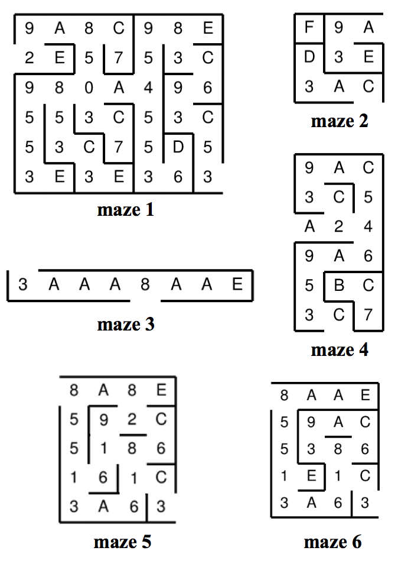

| Source file: | maze.{c, cpp, java} |
| Input file: | maze.in |
The Maze Makers is a publisher of puzzle books. One of their most popular series is maze books. They have a program that generates rectangular two-dimensional mazes like the one shown in Figure 1. The rules for these mazes are: (1) A maze has exactly two exterior cell walls missing, opening to two distinct terminal cells, (2) starting from any one cell, all other cells are reachable, (3) between any two cells in the maze there is exactly one simple path. Formally, a path is a sequence of cells where each cell and its successor on the path share an edge without a wall. A simple path is a path that never repeats a cell.
The Maze Maker program uses hexadecimal digits to encode the walls and passages of a maze. For each cell in the maze there is a corresponding hex digit. As shown in Figure 2, the 1's and 0's in the 4 digit binary representation of a hex digit correspond to the walls (1's) and passages (0's) for each cell in the maze. For example, the binary encoding for the hex digit B is 1011. Starting at the top of the cell and moving clockwise around it, this digit represents a cell with a wall at the top, a passage to the right and walls at the bottom and to the left. A path between two maze cells successively moves one cell up, down, left or right, going through passages only.
|

|

and Passageways |

|
Figure 3 shows the sample maze with the hexadecimal labels in each cell. For example, the hexadecimal digit E in the top-right cell indicates that it has a wall above it, to its right, below it, yet a passageway to its left. The hexadecimal digit 8 to its left indicates that its cell has only a wall above it. The inputs will always be self-consistent, in that the hexadecimal digits in neighboring cells will agree on whether they share a wall or passageway, and each input will always have precisely two terminal cells, each with one missing exterior wall.
Our sample maze is a legitimate maze in that all cells are reachable and there is a unique simple path between any pairs of cells in the maze. Your goal is to write a program that reads the hexadecimal descriptions of a potential maze and tests to determine if it is legitimate. If there is a problem, your program must report only the first problem, as detailed below in the section titled "Output".
Input: The input consists of the descriptions of one or more
candidate mazes. Each maze description will start with two integers, H
and W, indicating the height and width of the maze, respectively, such
that
Output: For each candidate maze, the program should output
the first one of the following statements that applies:
NO SOLUTION
UNREACHABLE CELL
MULTIPLE PATHS
MAZE OK
The classification statements are defined formally as follows:
NO SOLUTION - There is no path through the interior of the maze between the two exterior openings.
UNREACHABLE CELL - There is at least one cell in the maze that is not reachable by following passageways from either of the openings in the exterior walls of the maze.
MULTIPLE PATHS - There exists a pair of cells in the maze that have more than one simple path between them. Two simple paths are considered to be distinct if any part of the paths differ.
MAZE OK - None of the above problems exist.
Note well that for the second case given in the following examples, there is no
path between the start and finish and there is an unreachable cell;
the correct output should simply be
Sample input and output is given on the following page.
| Example Input: | Example Output: | Maze Diagrams: |
|
6 7 9A8C98E 2E5753C 980A496 553C53C 53C75D5 3E3E363 3 3 F9A D3E 3AC 1 8 3AAA8AAE 6 3 9AC 3C5 A24 9A6 5BC 3C7 5 4 8A8E 592C 5186 161C 3A63 5 4 8AAE 59AC 5386 1E1C 3A63 0 0 |
MAZE OK NO SOLUTION MAZE OK UNREACHABLE CELL MULTIPLE PATHS MULTIPLE PATHS |
 |